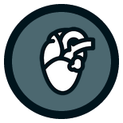

The primary treatment for blood clots is blood-thinning medication, known as an anticoagulant or ‘blood-thinner’. These medications increase the time it takes for your blood to clot. They prevent new clots from forming and existing clots from growing larger. Over time, the body absorbs the clot, more or less successfully getting rid of them. Blood-thinners themselves do not dissolve the clot. They can be given as a tablet, or as an injection under the skin into the fat tissue, typically the abdomen, or into a vein.
While clots often dissolve on their own, certain medications can dissolve clots quickly and are known as thrombolytics or “clot busters”. The most commonly used drug is called tPA (tissue plasminogen activator). These medications are given intravenously (directly into a vein) to break up the blood clots. Because these medications may increase the risk for serious bleeding, they are usually reserved for very extensive clots and for life-threatening situations. In DVT, sometimes “thrombectomy” is done. This is a procedure done by a vascular surgeon or radiologist, where a catheter is advanced into the clot and clot buster medication is injected into the clot to soften it up. The clot is then sucked out to open up the occluded veins. The patient is then put on blood thinners as usual.
An IVC filter traps blood clots that have broken loose from a DVT and prevents them from reaching the lungs, where they could become a pulmonary embolism.
Stents are metal meshwork tubes that are occasionally placed into veins to keep them open. Typically, a balloon widening (angioplasty) of a narrowed vein is done first, and then a stent placed to keep the vein from collapsing.